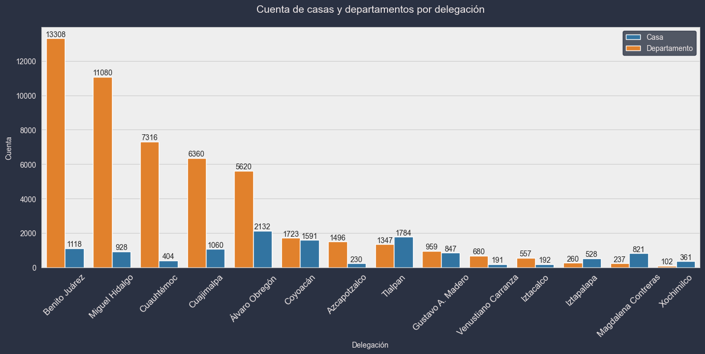
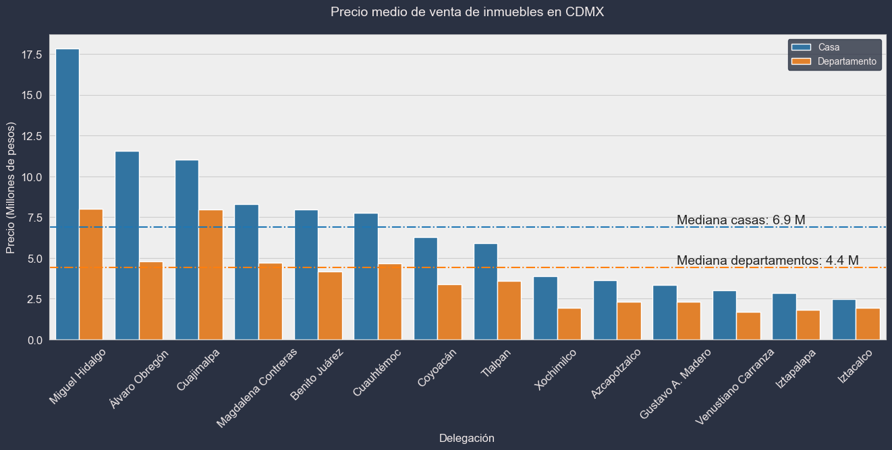
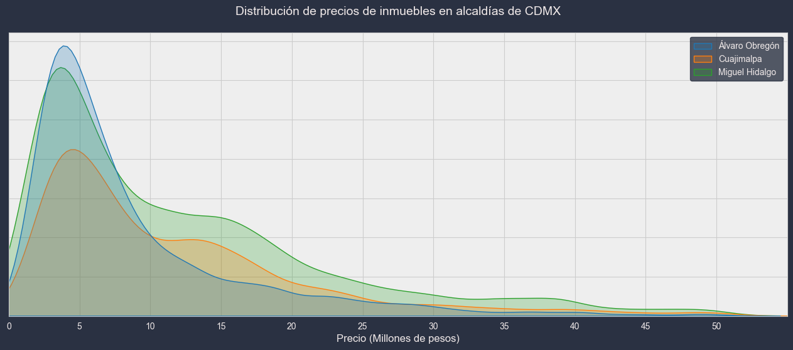
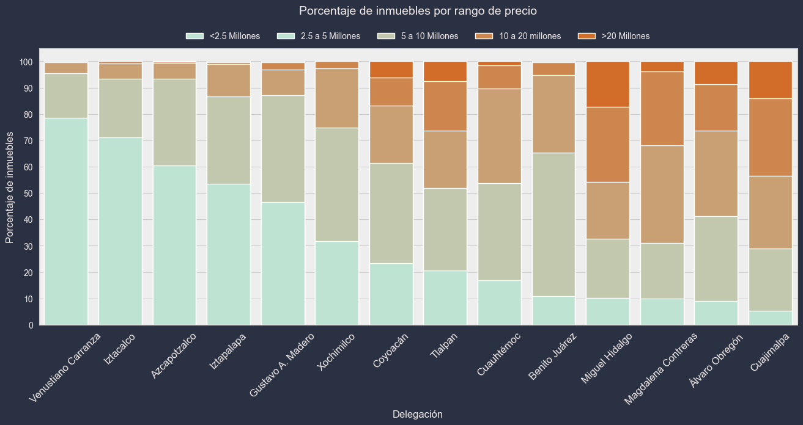

Análisis del Mercado Inmobiliario en CDMX
Por Omar Polanco Cázares. 17/02/2023
La Ciudad de México es el hogar de millones de personas, compuesta por incontables casas y edificios. Como adulto joven que pronto buscará un hogar propio, estoy interesado en entender qué tipo de vivienda sería adecuada a mis necesidades y presupuesto. Por eso, en este proyecto analicé el mercado inmobiliario de la Ciudad de México. El propósito de este trabajo es crear un modelo que permita predecir el precio comercial de un imueble con base en sus características. Para esto, me basé en las propiedades publicadas en Lamudi.com. A continuación presento los hallazgos de este estudio.

1. Introducción
Para recabar datos acerca del mercado inmobiliario en la ciudad, utilicé BeautifulSoup para obtener las propiedades publicadas tanto a la venta como a la renta. Luego, usando Pandas, limpié y ordené la información. Después de esto, quedó un conjunto de datos con las siguientes frecuencias.
Tenemos un total de 63,232 propiedades, incluyendo renta y venta. La gran mayoría de los departamentos publicados en la plataforma se concentra en las alcaldías Benito Juárez, Miguel Hidalgo, Cuauhtémoc, Cuajimalpa y Álvaro Obregón. Por otra parte, las casas se concentran más en Álvaro Obregón, Tlalpan y Coyoacán. Además, vemos que en la mayoría de las demarcaciones hay más departamentos que casas, pero Tlalpan, Magdalena Contreras, Iztapalapa y Xochimilco son excepción. Cabe recalcar que descartamos las alcaldías Milpa Alta y Tláhuac de este análisis porque el número de inmuebles es despreciable. Ahora que sabemos con cuántos inmuebles estamos trabajando, podemos comenzar a hacernos preguntas acerca de la industria inmobiliaria y responderlas.
2. ¿Cuáles son las delegaciones más caras y más accesibles para comprar una propiedad?
La Ciudad de México tiene zonas que se ajustan a distintos presupuestos. Iztacalco es la alcaldía con precios más accesibles, ya que ahí un departamento de precio medio cuesta 1.9 millones de pesos, mientras que por una casa tendríamos que invertir cerca de 2.5 millones. Otras demarcaciones con precios parecidos son Iztapalapa y Vensutiano Carranza.
Luego, tenemos partes de la ciudad que se encuentran más bien en un precio moderado. Una casa en Coyoacán cuesta 6.2 millones, mientras que un departamento vale 3.4, lo cual es muy similar en Tlalpan, donde estas cantidades son 5.9 y 3.6 millones, respectivamente.
Finalmente, nos encontramos con las delegaciones más caras de la ciudad: Cuajimalpa, Álvaro Obregón y Miguel Hidalgo. Cuando se trata de comprar una casa en esta última, el precio se dispara a una cantidad de casi 18 millones de pesos, lo cual está muy por encima de lo que costaría en cualquier otra alcaldía. Los departamentos, por su parte, son casi igual de costosos ahí y en Cuajimalpa, con un valor medio de 8 millones.
Sin embargo, algo que debemos tomar en cuenta es la variabilidad de los precios. Si bien un departamento de precio medio en Miguel Hidalgo es bastante costoso, también podremos encontrar propiedades de todos los precios. A continuación se muestra la distribución de los precios de las tres delegaciones más caras.
Las tres distribuciones tienen una moda bastante parecida, debajo de los 5 millones de pesos. Sin embargo, Álvaro Obregón tiene mayor cantidad de propiedades de valor relativamente accesible, y menor cantidad con un valor alto en comparación con las otras delegaciones. El 41% de los inmuebles en esa delegación cuestan menos de 5 millones de pesos. En comparación, en Miguel Hidalgo solo el 32% se encuentra en ese rango de precio, mientras que el 28% vale entre 10 y 20 millones de pesos.
Así, podemos encontrar qué porcentaje de los inmuebles de cada alcaldía se encuentran en cierto rango de precios.
Venustiano Carranza es la alcaldía con mayor porcentaje de inmuebles de menos de 2.5 millones de pesos, ya que cerca del 80% de las propiedades caen en ese rango. En Azcapotzalco, ese número es 60%. Tlalpan y Coyoacán son las alcaldías con una distribución relativamente más uniforme, donde alrededor del 20% de las propiedades cuestan menos de 2.5 millones, mismo porcentaje que las que tienen un valor entre 5 y 10 millones.
Es debido a estas razones que concluimos que las tres delegaciones más caras para adquirir una propiedad en la Ciudad de México son Miguel Hidalgo, Cuajimalpa y Álvaro Obregón. Un departamento de precio medio en esas tres alcaldías cuesta 6.5 millones, mientras que una casa, 12.5 millones. Por otra parte, las delegaciones más accesibles son Venustiano Carranza, Iztapalapa, Iztacalco y Azcapotzalco. Una casa de valor medio en esas alcaldías cuesta 2.2 millones, mientras que un departamento, 2.8 millones.
2. ¿Cuánto cuesta rentar un departamento en la CDMX?
Ahora que hemos hablado acerca de cuánto cuesta comprar una propiedad en la ciudad, comenzaremos a analizar cuánto cuesta rentar Específicamente, hablaremos sobre departamentos. Primero, hay que aclarar que los precios de la renta en CDMX tienen un amplio rango, dependiendo del lugar donde se encuentre el edificio, la extensión de la construcción, entre otros factores. A continuación vemos la distribución de los precios de renta de departamentos y cuartos en toda la ciudad.

Encontramos que hay rentas tan bajas como 3 mil pesos mensuales, así como hay departamentos que cobran más de 150 mil. Sin embargo, la propiedad de precio medio cuesta 25,800mensuales. Ahora, cuando se busca rentar, es importante considerar cuánto se está dispuesto a pagar, pero también lo que se está recibiendo a cambio de ese precio. Es distinto pagar 20 mil pesos por un inmueble con un cuarto, que pagarlos por un lugar con 4 cuartos que se pueden compartir con otras personas. El precio medio de un cuarto es de 13 mil pesos mensuales, y solamente una cuarta parte de los cuartos cuesta menos de 9 mil pesos.
No solo es importante considerar cuántos cuartos hay en un departamento, sino que también se debe tomar en cuenta qué tan espacioso es el inmueble. El precio medio de renta por metro cuadrado en las delegaciones se observa en la siguiente gráfica, contrastado con el tamaño medio de un departamento en esa delegación.
 Encontramos, de nuevo, que Miguel Hidalgo es la delegación más costosa, con un precio
medio por metro cuadrado de 288 pesos mensuales y un tamaño medio de 120 metros. esto significa que, si quisiéramos
rentar un departamento de 50 metros cuadrados, pagaríamos poco menos de 15 mil pesos mensuales por él.
Después, están Cuauhtémoc y Benito Juárez, ambas con costos superiores a los 200 pesos.
En el otro extremo, el departamento medio en Xochimilco cuesta 120 pesos mensuales por metro cuadrado.
Resulta interesante el caso de Magdalena Contreras, que tiene un precio medio por metro
cercano al de Iztacalco, pero tiene departamentos bastante más amplios, de más de 110 metros cuadrados.
Encontramos, de nuevo, que Miguel Hidalgo es la delegación más costosa, con un precio
medio por metro cuadrado de 288 pesos mensuales y un tamaño medio de 120 metros. esto significa que, si quisiéramos
rentar un departamento de 50 metros cuadrados, pagaríamos poco menos de 15 mil pesos mensuales por él.
Después, están Cuauhtémoc y Benito Juárez, ambas con costos superiores a los 200 pesos.
En el otro extremo, el departamento medio en Xochimilco cuesta 120 pesos mensuales por metro cuadrado.
Resulta interesante el caso de Magdalena Contreras, que tiene un precio medio por metro
cercano al de Iztacalco, pero tiene departamentos bastante más amplios, de más de 110 metros cuadrados.
3. ¿Es más caro rentar o comprar?
Al mudarnos a una nueva residencia, podemos comprar o rentar. Esto dependerá de nuestro presupuesto, nuestras metas financieras y nuestros planes de vida, entre otros factores. Podemos analizar los precios de cada una de estas operaciones para obtener una idea sobre qué nos conviene más. En cada una de las alcaldías de la ciudad, tomamos el precio medio de renta de las propiedades. Luego, dividimos esto entre el precio medio de la venta. Así, obtuvimos qué porcentaje del valor del inmueble medio se cobra mensualmente de renta. Aquí los resultados.

Encontramos que las delegaciones donde se cobra mayor porcentaje del valor del inmueble como renta para las casas son Iztacalco y Vensutiano Carranza, donde se cobra más del 0.8 por ciento mensual. Para los departamentos, las alcaldías con el mayor porcentaje son Xochimilco y de nuevo Iztacalco, con alrededor de un 0.6 por ciento. Resulta interesante que las delegaciones que anteriormente habíamos concluido son las más accesibles para comprar propiedades, como Vensutiano Carranza, Gustavo A. Madero e Iztacalco, también son las que mayor porcentaje de renta cobran con respecto al valor del inmueble. De forma contraria, las delegaciones con propiedades más caras a la venta, es decir Miguel Hidalgo, Álvaro Obregón y Cuajimalpa, se encuentran entre las que menor porcentaje cobran.
Siguiendo esta idea, calculamos la correlación entre el precio medio por tipo de inmueble de cada alcaldía y el porcentaje del valor que se cobra de renta. Encontramos una correlación de -0.31, que si bien no es fuerte, resulta interesante. Esto podría indicar que, por alguna razón, un menor valor en los precios de las viviendas de una alcaldía esté asociado con un mayor porcentaje de cobro de renta en comparación con el precio de venta. Sin embargo, sin hacer más investigación al respecto, no se puede concluir con seguridad.
Ahora, analizando la decisión entre comprar y rentar, usaremos un ejemplo. Primero, una casa en Iztacalco. En esa alcaldía el precio medio es 2,441,300 pesos. La renta media es de 23,000. Entonces, simulamos un crédito hipotecario con ayuda de la página de Condusef. Encontramos un crédito de 2,241,300 a 10 años, para el cual necesitamos pagar un enganche de 200,000. Al ver la tabla de amortización, encontramos que se requiere un pago total de 34,000 pesos mensuales. Entonces, al final de los diez años, habríamos pagado 4,384,520 pesos. Por contraparte, si hubiéramos rentado durante diez años, nuestra renta inicial habría sido de 23,000 pesos. Sin embargo, debemos considerar que las rentas tienden a aumentar en el tiempo. Por tanto, tomaremos en cuenta una inflación del precio de 3 por ciento anual. Entonces, al final del periodo, habríamos pagado un total de 3,164,000 pesos. Por tanto, en este plazo, la diferencia entre el desembolso por comprar y rentar sería de 1,220,520 pesos. Sin embargo, debemos considerar que en el primer caso, tendríamos un inmueble a nuestro nombre, y en el segundo, no.
4. Modelo predictivo de precio
Una vez que hemos analizado el comportamiento general de los precios de venta y renta, antes de adquirir o rentar una nueva propiedad, nos gustaría tener una manera de valuarla. Esto resulta conveniente para saber si el precio que nos está cobrando el actual dueño es justo. Incluso, sería posible encontrar algún inmueble que esté a la venta por debajo del precio de mercado. Por esto, utilizamos el algoritmo de K-Nearest neighbors para entrenar un modelo que sea capaz de predecir el precio de una vivienda en función de sus características. Consideramos que este modelo es adecuado porque el precio de un inmueble está influenciado en cierta medida por el precio de las propiedades circundantes. A continuación se presentan los resultados del modelo, tanto para los inmuebles en renta como los que etsán a la venta.

El modelo tiene un coeficiente de determinación relativamente alto para ambos casos. Encontramos que para la venta, el modelo tiene un mejor desempeño cuando se utilizan 15 vecinos, que da un coeficiente de 0.81. Por su parte, la renta se puede predecir mejor con 19 vecinos, lo cual genera un coeficiente de 0.79.
5. Conclusión
El mercado inmobiliario en la Ciudad de México tiene inmuebles con características y precios considerablemente variados. Sin embargo, hay que considerar qué tan accesible es para las personas que habitan la ciudad. Si consideramos que el salario mínimo es de alrededor de 200 pesos diarios y la renta mediana de un departamento en una de las alcaldías menos costosas es de alrededor de 8 mil, nos daremos cuenta de que hay gran cantidad de familias que no pueden costear un hogar. Por otra parte, para las personas que pueden pagar renta o incluso una hipoteca es posible encontrar viviendas de todo tipo, en vecindarios muy distintos y que se acomodan a muchos estilos de vida. Finalmente, es posible, para las personas que tienen la capacidad de ahorrar, el adquirir un departamento y ofrecerlo a la renta, usando ese dinero para ayudar a pagar la hipoteca. Este negocio es redituable, aunque también tiene sus riesgos. Esperamos que el modelo desarrollado pueda ser de utilidad para que las personas que quieran comprar o rentar un inmueble tengan una idea acerca del rango de precio en el que se encuentra, y así asegurarse de llegar a un trato justo con el ofertante.
Liga al repositorio con el código: Análisis Inmuebles